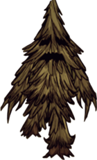
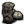
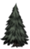
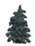
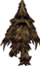
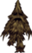
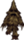

| Treeguard | |
|  |
|
| Health | 1400, 2000, 2500 |
| Damage | 35, 50, 62 to player 105, 150, 186 to mobs |
| Attack Period | 3 |
| Attack Range | 2.1, 3, 3.75 |
| Walking Speed | 1.05, 1.5, 1.875 |
| Insanity aura | -100/min |
| Loot | , ×6 |
| Spawns from |  |
| DebugSpawn | "leif", "leif_sparse" |
| “ | I'm sorry about all of those trees! | ” |
| –Woodie | ||
Treeguards are Boss Monsters that can occasionally transform from Evergreens when a nearby Evergreen is chopped down. They are initially hostile towards the wood-cutter, assuming that is how they were spawned, have very high health and damage, and are capable of killing most unarmored characters in three strikes.
Treeguards do not normally spawn before Day 3, after which each Evergreen at any stage fallen has a 1.33% chance of spawning one from a nearby tree. After Day 30, up to two Treeguards may spawn at once, with up to three spawning after Day 80 given enough Evergreens nearby. They can spawn from any size Evergreen tree, besides Evergreen saplings (from recently planted Pine Cones) burned and dead Evergreens or Lumpy Evergreens.
A special Set Piece can be found as soon as Day 1, called Living Forest, wherein over ten Treeguards spawn at once, regardless of the number of trees someone has chopped down.
A Treeguard takes four blasts from the Ice Staff to be frozen. When killed, they drop Monster Meat and 6 Living Logs. Living Logs are required to build a Shadow Manipulator, among other things.
There are 3 sizes of Treeguards– short (70% scale), normal (100% scale), and tall (125% scale) that spawn from the respective size Evergreens. Their scale affects their health, damage, combat range, and walking speed.
When they first appear, Treeguards will aim to attack whoever chopped down trees near them and will follow their target indefinitely; however, they can be pacified by planting Pine Cones. Planting one within 16 units away has a 15% chance to pacify them, while within 5 units away has a 33% chance. Treeguards give a soft growl every time a pine cone is planted, whether or not it pacifies, even if they're sleeping. If an angered Treeguard following the player does not growl when a pine cone is planted, it was not planted close enough to calm the Treeguard. Planting pine cones ahead of time does not prevent Treeguards from spawning, nor does it calm them later. Attempting to chop down a tree in the presence of a pacified Treeguard will enrage it and cause it to attack, though it can be pacified again with more pine cones. It's even possible to pacify one after attacking it.
Snowless pacified Treeguard in winter.
When a Treeguard is pacified (or sleeping), it will return to the ground disguised as a tree; a Treeguard in this state has no waving animation like other normal trees, and does not have a stump nor does it appear in the map. During winter, a pacified/sleeping Treeguard will also have no snow, making it easy to distinguish from actual trees. At night, neutral Treeguards go to sleep, plopping down wherever they happen to be standing. As with one calmed with pine cones, if no one chops a nearby tree or attacks the sleeping Treeguard, it will not wake up until morning comes. Neutral Treeguards can also be put to sleep/pacified with pine cones.
If the player spawns a Treeguard while underground, the Treeguard will continue to pursue indefinitely even if the player has exited to the surface and returned.
Mobs will still attack a sleeping Treeguard if they would attack normally. Pigs, Abigail, and other friendly mobs must be kept in check, although the Treeguard will remain neutral to the player unless the player also attacks.
Treeguards will not come from dead Evergreens, Spiky Trees, or Burned Trees. Treeguards have been reported to grow to the next stage of Treeguard Size if they are small enough.

Sleeping (pacified) Treeguard. Prompt is "Attack" instead of "Chop".
Treeguards have a great deal of health but are slow. Killing the monster by dodging its attack and then running in to strike 3-4 times before dodging again is an effective way to wear it down, although this will drain considerable Sanity. This method works especially well with Woodie's Beaver form.
Alternatively, they can be put to sleep using the Pan Flute or Sleep Darts, or frozen with the Ice Staff.
Tooth Traps are useful against Treeguards as they will not only damage them but often get the monster stuck on them for a moment.
A Treeguard and a Deerclops fighting.
Leading a Treeguard to other hostile creatures or vice versa is another effective way to kill it. Pigs will attack them on sight, and multiple Pigs can easily disorient a Treeguard by hit and run tactics. A good-sized herd of Beefalo in heat can make short work of a Treeguard, and due to its ability to be pacified, the Treeguard can be placed close to a herd and effectively farmed every mating season (also yielding Meat and Beefalo Horn drops). They can also be tricked into fighting Deerclopses, Hounds, and Tentacles. Another possible way to kill a Treeguard is to pacify it by planting pine cones and light surrounding things on fire; it will catch fire but won't wake up, though this method causes the Living Logs it drops to burn into ashes, and Living Logs are surprisingly useful.
A good way of killing Treeguards with Woodie is to gnaw trees to try and spawn one in Woodie's Werebeaver form. The Werebeaver needs to eat a lot of plant matter to keep his Log Meter up, so it's likely Treeguards will eventually spawn.
If you set a nearby tree alight and the Treeguard walks next to it, He will light up and take periodical damage. If killed by fire, he will not drop the usual loot but will leave some ash and cooked monster meat.
Having trouble while trying to summon a Treeguard is quite normal. A way to speed up this process is to have some befriended Pigs help chop trees. They will continue to chop trees until the player runs a distance from the trees. If the Pigs spawn Treeguards, the Treeguards will attack the Pigs instead of the player. Another way is to burn a large area of trees, then chopping the burnt trees down. Since burnt trees are counted, it is possible to get one by chopping a bunch of burnt then going to a regular tree.
Below is the number of hits it takes with each weapon to kill various sized Treeguards when playing with characters with a default damage modifier. The Weather Pain is not included due to the random nature of its projectile.
| Weapon |
|
|
| ||||||||||||||
|---|---|---|---|---|---|---|---|---|---|---|---|---|---|---|---|---|---|
| No. of hits for  | 589 | 184 | 148 | 92 | 82 | 74 | 60 | 43-85 | 58 or 35 | 50 | 48 | 43 | 42 | 37 | 25 | 13 | 3 |
| No. of hits for  | 471 | 148 | 112 | 74 | 66 | 59 | 48 | 34-68 | 47 or 28 | 40 | 39 | 34 | 34 | 30 | 20 | 10 | 2 |
| No. of hits for  | 330 | 103 | 83 | 52 | 45 | 42 | 34 | 24-48 | 33 or 20 | 28 | 27 | 24 | 24 | 21 | 14 | 7 | 2 |
")
")
")
")
| Mobs | |
| Hostile Monsters | Batilisk • Cave Spider • Clockwork Bishop • Clockwork Rook • Clockwork Knight • Dangling Depth Dweller • Depths Worm • Frog • Guardian Pig • Ghost • Shadow Creature • Hound (Red Hound • Blue Hound) • Killer Bee • Lureplant • MacTusk • Merm • Mosquito • Spider • Spider Warrior • Spitter • Tallbird • Tentacle (Big Tentacle • Baby Tentacle) • Wee MacTusk • (Birchnut Treeguard • Varg |
| Boss Monsters | Ancient Guardian • Deerclops • Spider Queen • Treeguard • (Bearger • Dragonfly • Goose |
| Neutral Animals | Bee • Beefalo • Bunnyman (Beardlord) • Koalefant • Krampus • Pengull • Pig (Werepig) • Rock Lobster • Snurtle • Slurtle • Smallish Tallbird • Splumonkey • (Buzzard • Catcoon • Volt Goat |
| Passive Animals | Baby Beefalo • Butterfly • Chester • Crow • Gobbler • Mandrake • Rabbit (Beardling) • Redbird • Smallbird • Snowbird • (Glommer • Moleworm |
| Other | Abigail • Charlie • Maxwell • Pig King |

{kind=link}
{kind=link}
{kind=link}
{kind=link}
{kind=link}
{kind=link}
{kind=link}
{kind=link}
{kind=link}
{kind=link}
{kind=link}
{kind=link}
{kind=link}
{kind=link}
{kind=link}
{kind=link}